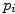
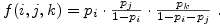

06.21.07
Hooray for Boston
Boston is the featured article on Wikipedia today!
Boston, Massachusetts - Wikipedia, the free encyclopedia
technorati tags:web, wikipedia, boston
Blogged with Flock
Teaching, Training, and Advising for the Harvard Mathematics Department. Oh, and some computer stuff.
Boston is the featured article on Wikipedia today!
Boston, Massachusetts - Wikipedia, the free encyclopedia
technorati tags:web, wikipedia, boston
Blogged with Flock
I’ve been blogging on a consistent basis (almost one post a day) for just over a month now. The fact that a few people have told me they like reading it makes me want to keep it up.
In the short term, however, posts are likely to slow down. My last final is today, and after the long weekend I’ll be taking off to MSRI for the Critical Issues in Education: Teaching Teachers Mathematics workshop. Bret Benesh, Tom Judson, and I are talking on Thursday, May 31 at 2:05pm. I hope to get a few posts in during that time.
After that, I’ll be going on a vacation (Holiday World, here we come!) back sometime after Father’s Day. My Math S-1ab (”calculus boot camp”) in the Harvard Summer School starts on June 25.
technorati tags:summer, apology
Blogged with Flock
Last week I wrote about the enumerate package which customizes the ordered list environment. It’s very useful, but if you want to do more, enumitem is for you.
This package takes many more optional arguments using the keyval-style interface. This means in order to get a list labeled (a)…(b)…(c)… you can type
\begin{enumerate}[label=(\alph*)]
\item item the first
\item item the second
\item item the third
\end{enumerate}
So far this is the same functionality as enumerate with more cumbersome syntax. But there are lots of other optional arguments you can use as well. For instance, on tests I want not only ordered lists of problem parts, but lots of space between the list items for the students to work. With enumitem I can type
\begin{enumerate}[label=(\alph*),itemsep=\fill]
\item Derive the equation …
\item Now solve the equation.
\end{enumerate}
\vfill
The package’s documentation has lots of other examples.
technorati tags:LaTeX, package, enumerate, enumitem
Blogged with Flock
Permalink Comments off
The 2007 NBA Draft Lottery was last night and has a nice little probability problem in it. Although it’s pretty painful if you’re a Grizzlies or Celtics fan.
Most professional leagues have a policy of awarding the top picks to the worst teams. But the NBA wanted to discourage tanking a season to get a top pick, and so removed this certainty by instituting a draft lottery to award the top three picks. Teams with worse records are weighted to have a higher probability of winning, but the weights are small enough to make the top pick to the worst team far from certain:
Here’s what actually happened, along with the probability of winning for each team:
|
LOTTERY RESULTS
|
||
|
TEAM
|
REC.
|
ODDS
|
|
1. Portland
|
32-50
|
5.3%
|
|
2. Seattle
|
31-51
|
8.8%
|
|
3. Atlanta
|
30-52
|
11.9%
|
|
4. Memphis
|
22-60
|
25.0%
|
|
5. Boston
|
24-58
|
19.9%
|
|
6. Milwaukee
|
28-54
|
15.6%
|
|
7. Minnesota
|
32-50
|
5.3%
|
|
8. Charlotte
|
33-49
|
1.9%
|
|
9. New York1
|
33-49
|
1.9%
|
|
10. Sacramento
|
33-49
|
1.8%
|
|
35-47
|
0.8%
|
|
|
12. Philadelphia
|
35-47
|
0.7%
|
|
13. New Orleans
|
39-43
|
0.6%
|
|
14. L.A. Clippers
|
40-42
|
0.5%
|
As you can see, none of the teams with the worst three records (Memphis, Boston, and Milwaukee), and thus the biggest probabilities of winning, ended up with any of the top three picks. Mathematicians often get the FAQ “What are the odds of that?” Well, let’s see.
Let

be the probability that the team with the ith worst record wins the lottery. The second pick is determined by the same rules, except that the team that got the first pick can’t get the second pick. So the probability that team j (i.e., the team with the jth worst record) gets the second pick, given that team i got the first pick is . The third pick is assigned the same way. So the probability that team i gets the first pick, team j gets the second pick, and team k gets the third pick is
. The third pick is assigned the same way. So the probability that team i gets the first pick, team j gets the second pick, and team k gets the third pick is

All the other teams are assigned picks according to worst record among those remaining. So there’s no more probability to be determined.
From the above you can see that the probability of the lottery ending up precisely this way is f(6,5,4) = 0.00068228, or .068%. Very unlikely. But so is the most likely event that the worst teams gets the first pick, the second-worst the second pick, and the third-worst the third pick. That’s f(1,2,3) = 1.88%. The more interesting event is that none of the worst three teams got any of the top picks. The probability of that is the sum
\,\,.")
over all triples (i,j,k) of distinct elements from the set 4, 5, 6, …, 14. There are (11)(10)(9)=990 such triples. There might be a nice combinatorial way to get a closed-form expression for this sum, or you can just use Mathematica to do it. I got 0.0405467, or 4.05%. Not that likely, but you would expect it to happen about once every 25 years. The lottery in its current form has been around since 1990.
Rich Zuckerman at NBC Sports published a table of the likelihood of all the bottom fourteen teams getting any of the lottery picks. The event that no bottom-three team gets a top-three pick is equivalent to the event that the third-worst team gets the sixth pick (think about that for a while). He’s got the same 4.05% figure in that position.
Is the draft lottery a good idea? The math is there, and those who make the rules should be content with the consequences. If having as “unfair” a distribution of picks as this occuring this often is acceptable to the team management, then they should keep it as it is. But the lottery was instituted to discourage teams from “tanking” (not trying to win games) the rest of the season so as to increase their draft position. I’m not sure it does. In a non-lottery system, the team with the worst record is awarded the first pick. In a lottery system, the team with the worst record is awarded the highest probability of the first pick. Among the available choices, that’s still the most attractive, so bad teams still have the incentive to try to have the worst record. But teams who legitimately “earn” the worst record are no more likely to be rewarded with high draft picks. So this system doesn’t reward the honest, or punish the dishonest, it just makes the crime pay less.
(I said earlier that this is particularly painful to Celtics fans. I live in the Boston area, but I am not a Celtics fan. I do sympathize with them, though. My point of view on the lottery is really only based in mathematics and, I guess, game theory.)
.
technorati tags:math, mathE-304, probability, basketball, nba, lottery
Blogged with Flock
Permalink Comments off
Somebody’s uploaded clips from one of my favorite math movies (not a very long list) to Youtube: Donald in Mathmagic Land. It’s a little featurette designed to teach the beauty and usefulness of mathematics. Released in 1959, I have to think that it was part of the space race and math-and-science push spurred by Sputnik.
The first time I saw this movie was as a fifth-grader around 1984, when I was in a summer math class at Black Hawk College in Moline, Illinois. Since then, I’ve probably seen it 30 times.
As president of the undergraduate math club at The University of Chicago, we had an annual Donald viewing with Edwardo’s pizza. Then as a postdoc I found a VHS copy on eBay. Now I try to show it in every class.
The movie has some memorable scenes. The part on the golden ratio is quite interesting, showing first how it’s found in the pentagram, then how that ratio is found in nature. The second most memorable scene is the part about playing billiards “by the diamonds.” You can read the whole plot on Wikipedia if you like, although they seem to suck all the enjoyment out of in that writeup.
It’s quite dated–there are some high-tech items that are genuine artifacts by now, and Donald’s not exactly politically correct. But I’m glad it was made, and I hope it comes out on DVD sometime soon.
technorati tags:math, funny, donald, duck, disney
Blogged with Flock
Permalink Comments off
Last week an Ontario-based programmer named Antonio Cangiano started writing his Math Blog - Mathematics is wonderful! (I agree, BTW). Only two articles so far, but one of them rose up the digg ranks pretty quickly and crashed his server. So maybe he’s doing something right. 
Refresh your High School Math skills is a post containing precalculus math problems. I’d agree with him that these are the kinds of faculties we’d like our students to have going into calculus–algebra, trigonometry, inequalities, familiarity with exponentials and logarithms, etc. I wish we could assume more of the conic sections material was taught but it doesn’t seem that way anymore.
His other post is called “The most enlightening Calculus books” and is about his favorite books. There is massive debate among college math teachers about how best to teach calculus: reform, IBL, “Harvard Calculus” (which I do not teach), the list goes on. And as someone who has perused dozens of free calculus books from publishing companies, I can say that I still haven’t found the perfect book for wide university appeal.
What I want in a freshman calculus book is:
I don’t insist on epsilons and deltas in a book, but I think we can get within epsilon of it (sorry). The concept that f(x) can be made arbitrarily close to L by taking x sufficiently close to a is precisely the definition without the greek letters, absolute value bars, and the dreaded less-than sign.
I think the derviative should be defined as a limit of difference quotients, and the integral should be defined as a limit of Riemann sums. I don’t think we need to prove that all continuous functions are integrable (that requires uniform continuity, which requires compactness of closed intervals, which I think is a little much), but the Fundamental Theorem of Calculus needs to be proved.
There is a tightrope to walk here. If you get too technical, students’ eyes will glaze over. I just don’t think everyone needs to know about epsilons and deltas. But if you get too hand-wavy, you lose the faculty to speak in any rigorous fashion about any limit, and suddenly every theorem becomes an article of faith.
I think today’s students are interested in putting everything together rather than following many subjects down their separate paths. So I’d like a book that includes as many applications as possible. Calculus is the universal language of science, and I want my students to think of it as something that continues to be relevant. Of course there are the myriad physics applications that mathematicians are most familiar with, but the majority of our students are concentrating in (a) economics or (b) some sort of life sciences or pre-med. So give me problems in comparative statics, theory of the firm, population systems, rates of absorbing medicine, etc.
Many of our students get discouraged about the difference between homework and test problems. I really believe that for a student to demonstrate mastery of calculus, they need to be able to solve “new” problems. I don’t think the students are well served if each exam problem is similar to a homework problem. Again, calculus is not something that has been solved and put in books to be memorized; it is a tool which can be used ad infinitum.
So I also want conceptual problems that are unique, and enough of them to give the impression that this is what calculus “is.” I like drill-type problems for practicing the techniques (after all, the word “calculus” means a set of rules for deriving something), but limiting calculus to that is like saying all you need to know to be a carpenter is how to saw a board in half.
Antonio’s a big fan of Calculus by Michael Spivak. Indeed, it is a beautiful book; it changed my life in my first year of college at the University of Chicago. It has excellent prose, wonderful, challenging problems, and the kind of snarkiness that appeals to smart math students and their teachers. I still pick it up about once a month. Yet, as someone in charge of teaching calculus to hundreds of college students, I can’t imagine using it. I don’t think every single student is going to be receptive to that kind of book.
So the quest continues.
technorati tags:math, books, calculus, spivak
Blogged with Flock
In honor of the Math 21b exam today I’ll recycle some of these pictures that seem to have made the rounds on the internet recently, with comments.
Sometimes when we write questions we know exactly what kind of response we want, but our student have not been “trained” in the language we use. Take this one:
The instructor was probably looking for something like “decreasing” or “concave up” but because of the terseness of the wording will never know if the student knows these ideas. Or if the question intends to check the relation between a physical law and a mathematical representation of it, perhaps it would be better to ask, “Explain why the graph is shaped the way it is.”
Another, too-literal response:

Here’s one where the student might have a point:

Now n00b isn’t in the OED but it’s part of the growing online hacking and gaming slang known as Leet. (Although Wikipedia suggests that the more correct antonym would be newb; n00b is more pejorative.) And if the teacher is allowing death and live (not life) to be correct, why not let in this “extended” English word?
Here are some from the “punt with humor” department:

 \
\
Poor guy.
Finally, this is the perfect example of the teacher and student completely miscommunicating. The teacher probably had no idea that the question could be interpreted this way:

Blogged with Flock
I use the enumerate package a lot to create custom enumerated environments. It’s easy to created an enumerated list (much like the HTML <ul> element) using
\begin{enumerate}
\item Item the first
\item Item the second
\item Item the third
\end{enumerate}
The default label for those items is of the form “<number>.” For nested lists the label changes to something else. But when I write mathematics problems I use different labels at the same level for different meanings. For instance, numbering parts (a)…(b)…(c)… means that each builds on the last. Numbering them (i)…(ii)…(iii)… means these are unrelated parts with the same theme. (I learned of this convention from Michael Spivak’s Calculus book.)
To achieve this customization of labeling, I use the enumerate package. It adds a single optional argument to the enumerate environment, so that I can say
\begin{enumerate}[(a)]
\item Item a
\item Item b
\item Item c
\end{enumerate}
The syntax for the optional argument is pretty easy:
Anything else, for instance a punctuation mark, is inserted directly into the label.
Next week I’ll look at the enumitem package, which does a lot more than enumerate. But enumerate is still pretty cool.
Blogged with Flock
Permalink Comments off
I don’t know if Tony Rogers was the first to write this joke, but it’s a good one.
Blogged with Flock
I just got back from the Faculty Workshop on Technology In Teaching and Learning sponsored by the Harvard Provost’s office. Some very rich food for thought.
The first part of the workshop was a presentation by Professor Bol about Geographic Information Services (GIS) and how they can be used in history courses. There is an unbelievable amount of data out there, indexed to places on the surface of the earth. Even a specialist in 7-17th century China can discover interesting patterns such as how the designation of certain capitals of Xi’an province as “thoroughfare capitals” led to the laying of railroads, which will form the basis of superhighways, and so on, through millennia of overlaid data. (There’s a nice article from Harvard Magazine about GIS).
Professor McCormick then showed some of what he did in his course on the fall of the Roman Empire. He used some of the GIS software to bring the roman empire to life, so that students “can really feel the heat of an sultry August afternoon in a roman seaport. He also created DVDs of his home videos and digital pictures from his visits to the places about which he was lecturing. He used this as a tool “to get students to come to class on time,” which by Harvard tradition is between 5 and 7 minutes past the hour. Finally, he and his TFs showed off a baby GIS exploration tool they created on the web.
So I look at all this data, and I think, there’s math all over there.  Can’t we use this information to demonstrate what we’re teaching? The thing that I fear the most is the overload. For instance, I’d love to use it to teach regression in my Math 20 class, but is it too much data to handle without having to teach them how to use a piece of analytical software like Mathematica or Matlab as well?
Can’t we use this information to demonstrate what we’re teaching? The thing that I fear the most is the overload. For instance, I’d love to use it to teach regression in my Math 20 class, but is it too much data to handle without having to teach them how to use a piece of analytical software like Mathematica or Matlab as well?
As for the movies, that might be easier. Visualizing mathematics has also grown in leaps and bounds with web technologies, all that’s needed is the elbow grease. I want to learn more about flash so I can do more of this.
At least on the aural level, this term I started getting to class a little bit earlier and playing jazz music from my IPod. Just like in retail, the music gets students in the receptive mood, and it can start conversations as well. It shouldn’t be too hard to set mathematical visualizations to great music.
The last of the faculty presentations was from Prof. Verba. He showed us some of the Harvard Open Collections: Women Working, 1800-1930 and Immigration to the United States, 1789-1930. He also showed the capabilities of the ever-growing Google Books program that the Harvard Libraries are collaborating with.
Finally, there was a panel discussion on social computing in courses. Participating were
Until now I’ve been wary of using Facebook. I created an account to find course assistants but I didn’t use it for much, and turned down friend requests from my students. But it seems that using the “limited profile” feature I can separate my student friends from my actual NSFW friends. So I’m looking forward to interacting with students there.
So in a few short hours I’ve got lots to think about over the summer and into the fall term. Hopefully I’ll have the time to do some of them!
technorati tags:technology, teaching, learning, gis, movie
Blogged with Flock
Permalink Comments off
Copyright ©2008 The President and Fellows of Harvard College.